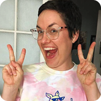
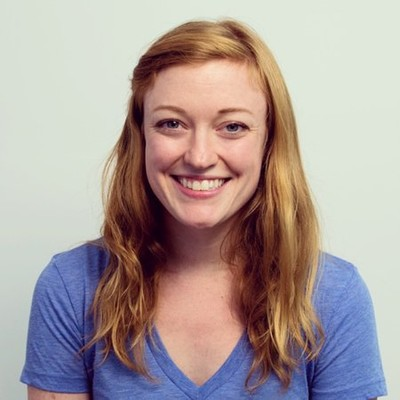

Hi, I'm Lawrence.
A constantly curious designer, founder, and inventor — building things that don't exist yet, always with passion behind the work.
- 8+ years in product design across consumer, fintech, and AI
- 3 patents shipped
- 1.5M+ users reached by work shipped to date

Different surfaces. Same instinct.
Across seven companies, one throughline: build the new primitive that didn't exist yet. Innovation, learning, the next move before the category knew it needed one.




Research.
Setting the team up for success with dedicated research. Understanding what the key activation problems actually were before building anything.
TLDR
Activation drops sharply at every step of the funnel. Of the visitors who reach the site, fewer than 10% reach activation. The biggest drops are concentrated on day 0.
Non-founder personas activate ~18% lower than founders. The product was implicitly designed for one persona; the funnel was bringing in others.
Key Findings
88% of activations happen on day 0. If a user doesn't activate the day they sign up, they very likely never will.
Sign-up is the highest drop step: confusion about the auto-trial, lack of context, and the modal entry pattern all compound.
Checkout requires 3 page navigations to change plan details. Users abandon when they realize they can't see the whole picture.
Website → Sign Up: 65%
Users land on the marketing site and proceed to create an account.
Sign Up → Upload: 35%
Of those who sign up, a third upload a document.
Upload → Share: 15%
Of those who upload, less than half share it.
Share → Activated: <10%
Activation defined as a shared link with a recorded view.
Sign up: Before.
Sign up was surfaced by a modal with information split across steps. Users were dropped into a trial with no context for what it was or when it would end.
The biggest single drop in the funnel sat here.

Sign up: After.
Surfaced the most important information first. Gave the auto-trial an explicit start, midpoint reminder, and end date. Removed the modal, gave the page room to breathe.
"Experience the best of DocSend free for 14 days," said up front, instead of inferred from a banner three pages in.
Designed with Treyce, special guest.

Survey: Before.
Multiple steps, and a visual language that didn't match Dropbox. Users coming in from Dropbox surfaces hit it and bounced. The change in design felt like leaving the product.

Survey: After.
Bridged DocSend and Dropbox's design systems by hand. DocSend wasn't resourced with DSE support, so this was a one-person port. Consolidated steps, used Dropbox-native components.
A user coming from Dropbox sees a continuous experience instead of a context switch.

Checkout: Before.
Multiple steps, no modular controls. Changing plan details meant going back three pages, and starting over if you got it wrong.

Checkout: After.
Condensed to one screen, modular, with inline editability. Plan details, team size, and payment all visible at once.
A new pattern for the team: billing surfaces that don't lock the user into a path.